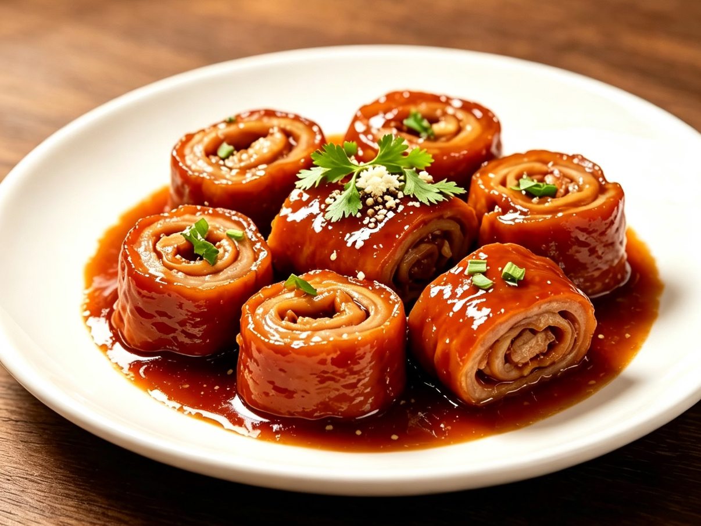
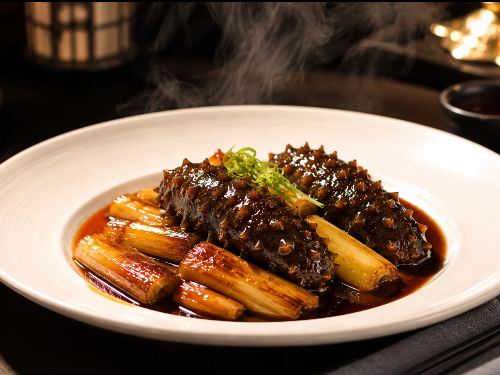
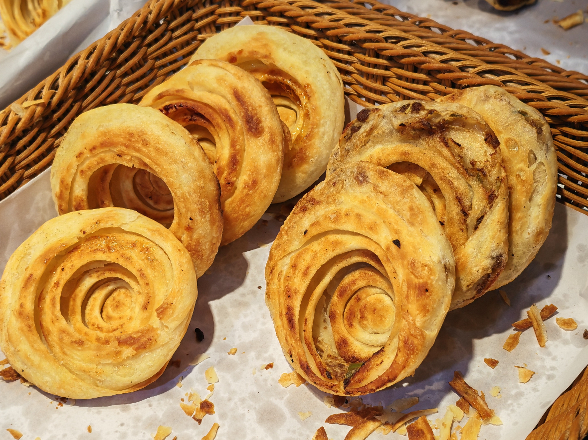
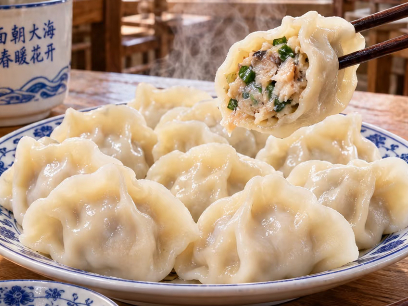
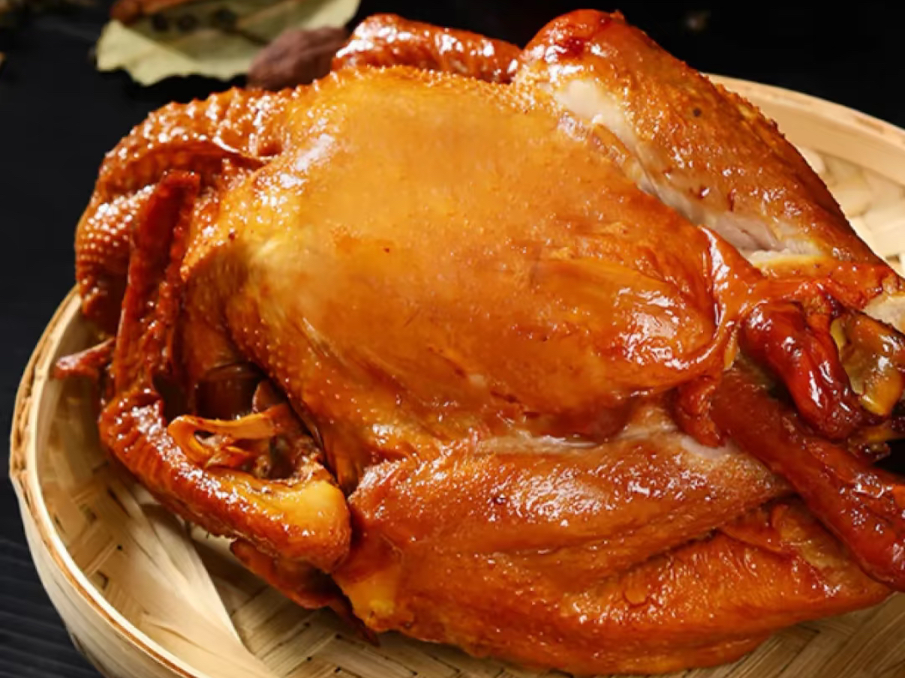
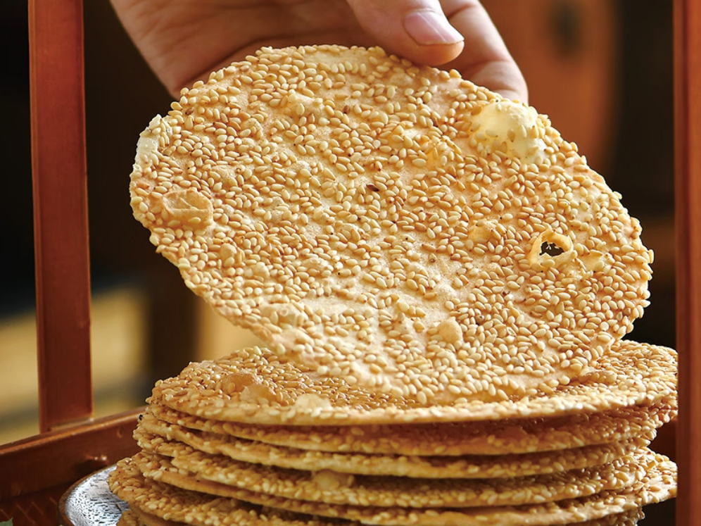

Jiu Zhuan Da Chang
A classic Lu cuisine dish, it blends sour, sweet, salty, spicy, and umami flavors, with intricate preparation. It is a renowned dish from Jinan.

A classic Lu cuisine dish, it blends sour, sweet, salty, spicy, and umami flavors, with intricate preparation. It is a renowned dish from Jinan.

A representative of Shandong cuisine, featuring tender and soft sea cucumbers, rich scallion aroma, and a fresh, mellow flavor.

Jinan's specialty snack features a crispy outer layer, multiple layers inside, and an abundant onion aroma.

A Jiaodong specialty, with tender and fresh fish, a smooth and delicate texture, and a rich seafood flavor.

Chinese delicacy, with tender and fall-off-the-bone meat, seasoned with five aromatic spices, fragrant yet not greasy.

Delicately crisp and sweet, with a rich sesame aroma, this is a traditional snack from Zibo.